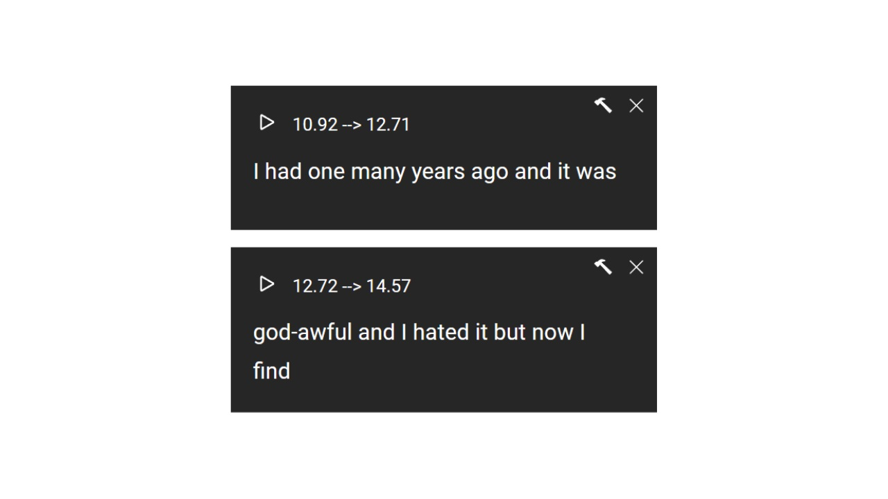
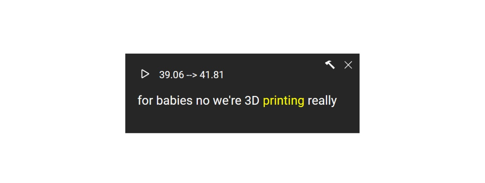

聞くモード
Netflixには学べる映画がたくさんありますが、YouTubeにはさらに多くの映像があります！
しかし、すべての映像の作成者が字幕を提供しているわけではありません。これらの映像を学ぶために、YouTubeが提供するCC字幕を使用することができます。ご存知のように、YouTubeはアップロードされた映像に自動的に字幕を追加します（主に英語の映像です）、これらの字幕を使って英語を学ぶことができます。

しかし、私たちはすぐに気づくでしょう。これらの字幕は機械生成されているため、文がしばしば連結されるか、異なる段落に分割されることがあります。
この問題を解決するために、字幕をドラッグアンドドロップできる機能を提供しています。CC字幕を自由に異なるパラグラフにドラッグアンドドロップすることで、これらの字幕を利用して学習することができます。

再生ボタンをクリックすると、プラグインは対応する字幕を再生し、再生が終了すると自動的にビデオを一時停止します。さらに、CC字幕には素晴らしい機能があります。正確なタイムラインが提供されるため、特定の単語の発音を繰り返し再生することができます。単語をクリックするだけです。
よくある質問
1. どのように使用しますか？
CC字幕を提供するYouTubeの映像に移動し、ページをリロードしてください。
2. 編集した字幕を保存できますか？
ツールバーで最初のボタン「進捗を保存」を見つけ、クリックすると字幕を保存できます。字幕をロードする必要がある場合は、2番目のボタン「進捗を読み込む」をクリックして字幕をロードできます。
3. 字幕に多くの誤りがありますか？
CC字幕は機械生成されるため、誤りは避けられません。字幕を使用して学習する際には注意が必要であり、字幕の内容を完全に信頼することはできません。